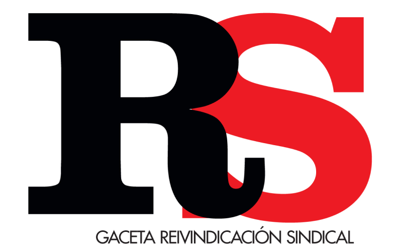

Es un medio nativo digital que reúne a periodistas, diseñadores, programadores y editores de video para crear contenido con rigor, precisión y pensado para servir a los ciudadanos.
Es una publicación digital que reúne temas, periodistas y entusiastas alrededor de la comida. Nuestra apuesta es caminar de la mano de la gastronomía mundial y ofrecer información de ingredientes, restaurantes, recetas, chefs, sugerencias y tendencias.
Diversidad, frescura, utilidad. Diversión y ligereza, pero también profundidad. Un equipo de periodistas, editores, diseñadores, ilustradores y programadores apasionados por contar historias y explicar el mundo de la manera más clara posible.
Es una revista y publicación digital de interés general, que lleva los temas más relevantes en el acontecer internacional.
Somos un medio de comunicación referente del periodismo hidalguense que busca informar del acontecer del estado. La verdad impresa es nuestro lema.
Gaceta Reivindicación Sindical (RSS) es una revista especializada en el sindicalismo en México.La voz de los trabajadores.
